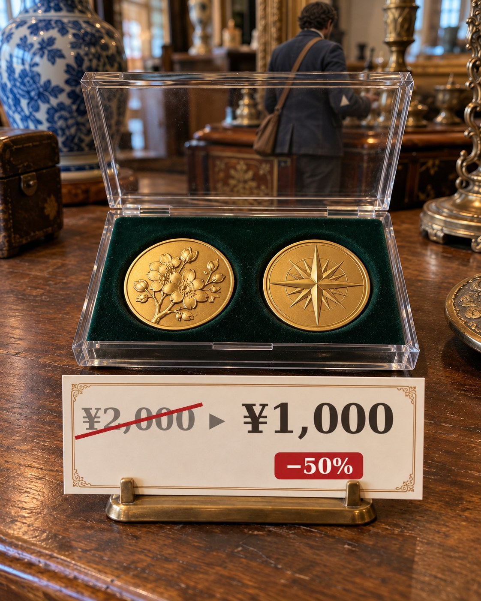
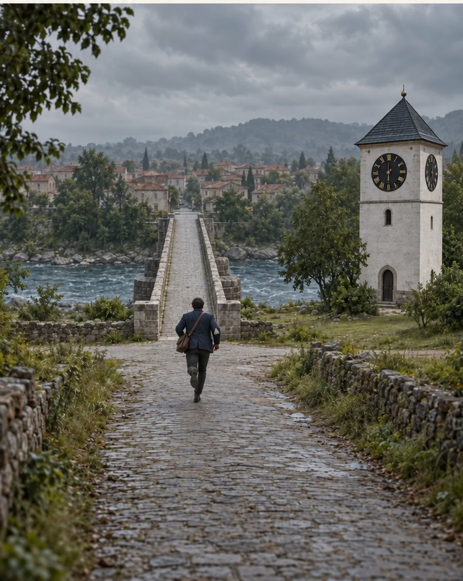
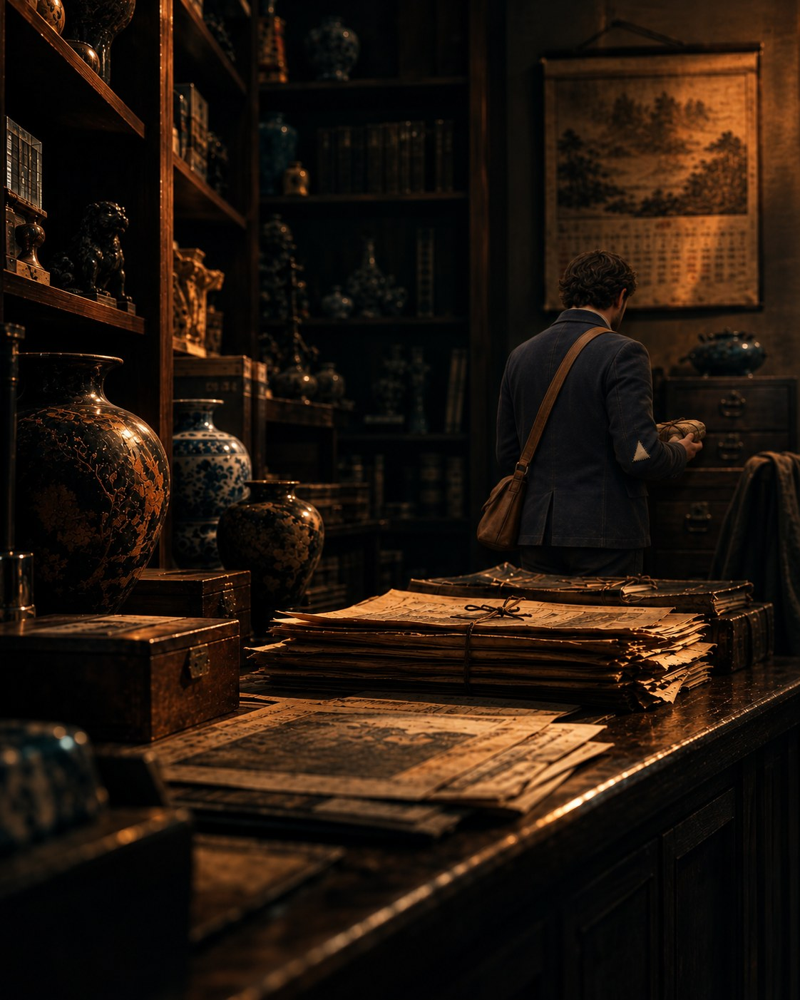
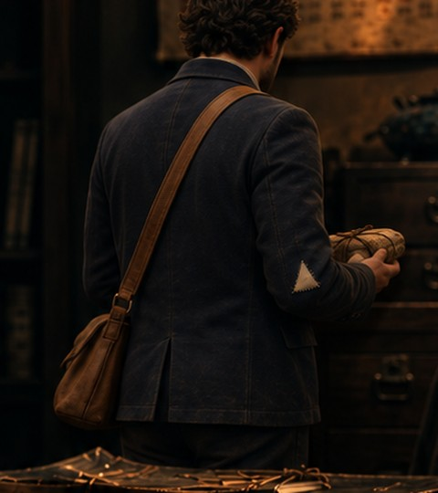

赤い糸の先 ／ 第二話
三枚目の後ろ姿
翌朝、瀬尾は資料室へ来るなり、白い紙コップを二つ、写真から離れた机の端に置いた。
「昨夜の話、もう係長に届いた。四枚の行方が分かったんだって？」
水城は受け取ったコップを置き直した。コーヒーはまだ熱かった。
「鑑定を頼んだだけ。どこで四枚になったんだろう」
「引き渡しで二枚、押収で二枚。足し算だけなら簡単だから」
瀬尾は笑わなかった。水城は昨夜の照合票を開いた。照会を受け付けた印が、もう押されている。赤い線を引いた紙のほうは、机の上に残っていた。
「もう一つ見てほしいものがある」
水城が並べた一枚目の写真は、ガラスケースのある骨董店だった。二枚目には橋が写っている。説明をしないまま、どちらの写真も瀬尾のほうへ向けた。

074 ／ 蔵の市
073 ／ 橋の近く瀬尾の指が、二枚の写真の右肘で止まった。
「同じ上着には見える。顔が見える写真、ある？」
水城は首を振った。昨夜のうちに蔵の市の写真を当たったとき、受け渡し先の控えまで見た。そこには田中の名前がある。写真の男の名前だと言えるものは、どこにもなかった。

机の端で電話が鳴った。係長からだった。
「店に問い合わせるなら昼までに。先方には担当から連絡する。あと、橋の件を一緒に回す理由があるなら、報告に書いてくれ」
水城は二枚の間に置いた付箋を見た。朝の光でも、『同一人物か』の最後の一文字だけはっきり濃い。
「まだ、似た上着が写っているところまでです」
「じゃあ、そう書いて。あとから別の人間が読んでも分かるように」
電話を切って、水城は新しい用紙を取った。第一行に『右肘』と書いたところで、瀬尾が写真の端を押さえた。
「その鞄。こっち、肩から落ちかけてるでしょう」
瀬尾は肩紐を指で追った。橋の写真では斜めに張り、売り場では背中に沿って下がっている。どちらも茶色で、上着の紺から浮いて見えた。
「前に市場の写真で、こんなふうに鞄をずらした人を見た気がする。鑑定書を撮ったときの。何の品だったかな」
水城は閉じた事件の索引を引き寄せた。市場という言葉は、本文にも表題にも入らないことがある。品物で探すしかなかった。硝子の器、額縁、指輪。瀬尾は水城の指の動きを追って、ある行で机を軽くたたいた。
「壺。それ」
二十三の箱は、棚の背に押しつけられていた。引き出すと、箱の上を滑った埃が指に落ちた。
中にあったのは、盗まれた壺が市場で見つかったときの記録だ。前の調査で見ていたのは、手前に置かれた鑑定書の日付だった。水城は紙焼きを持ち上げ、店先から奥へ視線を移した。

男がいた。見る角度が違う。橋では肩が上がり、蔵の市では腕が棚のほうを向いていた。市場の男は、店の奥でこちらに背を向けている。水城は、上着の色を確かめ、次に右肘を見た。
白い布があった。
「出していい？」
瀬尾が言い、三枚とも見える場所に置き直した。水城は椅子を引いた。二枚だったときは、机の中央に指一本分の隙間があった。三枚にすると、一枚を窓際までずらさなければならなかった。
 蔵の市橋の近く
蔵の市橋の近く
市場「この人が三か所にいたとしたら」と瀬尾が言った。
続きが聞こえなかった。廊下で台車の車輪が段差を越え、棚のガラスが震えた。音が収まっても、瀬尾は続きを口にしなかった。
水城は用紙の『右肘』に続けて、『紺の上着』『茶色の肩掛け鞄』と書いた。件名は『写真三点に共通する特徴』。三件の番号をつけ、照合に使った写真を添えた。
保存する直前に、一枚目の写真を振り返った。男は値札の向こうにいる。昨日まで、この写真の大事なところは、ケースの中のメダルだった。今はその外の人物を報告しようとしている。次にこの写真を開く人は、最初から男を見るだろう。
「瀬尾。三枚とも、切り抜く前の写真も送る」
「見るのは肘でしょう？」
「肘だけ送ったら、肘の外に何があったか、次の人には分からないから」
瀬尾は窓際の写真を取り上げ、丸まりかけた角を手のひらで押さえた。水城は添付を一つずつ入れ直した。
昼前、担当から短い返事が来た。『写真の三件は一緒に預かります』。その下に、別の件名が続いていた。
『野鳥園に届いた予告状について。封筒の表だけでなく、裏の写真も探してください』
水城は昨夜から机の隅にあった封緘紙を手に取った。乾いた端が、指を放すと元の形に戻った。
野鳥園の箱には、封筒の裏を撮影した写真が一枚だけあった。住所の代わりに、水城の目に入ったのは、封をした小さな黒い紙だった。